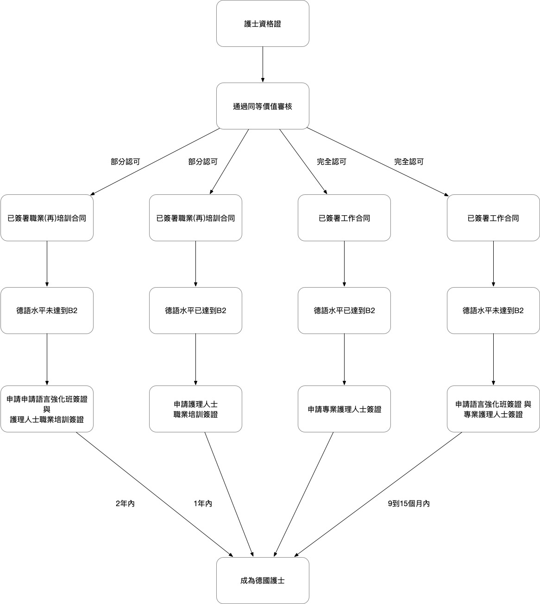

成為德國的護理人士
德國的人口結構變化日趨明顯。老齡化的德國社會急需在醫院和門診工作的護理人員。無論是對於護理企業，醫院還是老人院或者其他形式的護理設施而言，贏得并且保留專業護理人才越來越艱難。根據最新德國聯邦就業中介局緊缺人才分析表明，每100個老人院的護理崗位僅有29人報名。由此看來能否保障醫療護理人員的工作成爲挑戰的重點。
護理人員在德國的收入
德國共有16個聯邦州，而每個州的規定的護士基本工資都不同。根據目前最新的統計數據，護士的收入的確具有很大上調的空間，工作的複雜性，與工資不能成正比。護士每月的平均毛工資為2452歐元。由於德國護理人士緊缺情況日趨嚴重，要求工資上調的呼聲也越來越大。
許多人認為：只有高工資，才會吸引更多的年輕人選擇護理行業。然而目前護理人員內部的工資的確差別就很大。
工資的高低得看，是在一間大醫院工作，還是在老人院或康復醫院工作。在大醫院工作，得到的一般都是勞資合同所規定的工資，不會被雇主壓低工資，而在老人院或者康復醫院工作的護士是沒有勞資合同工資的。
另外就是看工作的地點：東西德國雖然已經統一多年，而收入的區別仍然明顯。在前東德工作的護士每月工資為2170歐元，而前西德為2490歐元。東西合併平均值得出2452歐元/每月。
護理管理人員收入當然多些，比如養老院護理部門總管平均毛收入可達5800歐元/每月，護士長的平均毛工資為3080歐元/每月。
醫院護士的收入要高於老人院護士的工資。醫院護士的平均毛工資為2730歐元/每月，而老人院護理人士為2400歐元/每月。
護士助理平均每月毛收入為1780歐元，相當與一位在德國位受過職業培訓的售貨員的收入。
除此之外，工資的高低當然也能夠體現在工齡上：一名剛參加工作的，年齡在18到25歲年輕護理人員，收入在2250歐元/每月起。而一位年齡在56歲到65歲之間的老護士，在德國境內的毛工資平均值可達2600歐元/月。
成為德國護理人士之路
{kind=link}
願意在德國長期從事護理工作的人，需要拿到德國國家頒發的職業許可証。爲了拿到職業認可，一般需要德語以及專業的本土化的資格進修。職業認可申請是在就職地點的州政府的相關部門進行的。在任何一個聯邦州頒佈的許可證都是全德國有效的，以下幾點必須注意：
- 認可的畢業證書：在祖國拿到的畢業證必須在德國通過審核認可。是否與德國的職業證書同等價值。如果不是，需要通過專業本土化的進修。
- 足夠的德語能力：根據每個聯邦州的不同要求，要達到B1甚至B2的德語水平。
- 身心健康：通過德國醫生的證明，您的身心健康，適合從事護理工作。
- 為人可靠：爲了證明您的可信任性，您需要提供無犯罪證明。根據不同情況，需要您提供您在祖國的無犯罪記錄證明，或者德國的無犯罪記錄證明
職業審核認可與國籍無關，而是與您拿到畢業証的所在地有關：
在歐盟任何一個國家拿到的畢業證：如果您在歐盟境内或者歐共體成員國内的任何一個國家拿到了畢業證，一般來説已經自動通過了認可。需要注意的是，德語水平的要求。
在非歐盟區拿到的畢業証：因爲護理職業屬於緊缺職業，根據就業行政法規，允許招收第三國護理工作人員。在您申請簽證之前，必須先搞清楚您畢業證書的認可度。對與畢業證書的認可是至關重要的。根據認可結果，可有以下步驟可行：
- 您的職業證書得到了全面的認可：畢業證書價值能夠被確認同等性，而且滿足了其他要求（比如德語能力）。只要您有在德國確定的工作崗位，就能在德國駐外國大使館或領事館申請前往德國就業的簽證申請。抵達德國以後，您需要前往相關外國人管理部門提出辦理護士就業居留的申請。需要注意的是，在德國護理職業屬於技術培訓的職業，而不是像很多國家那樣屬於高等學府所培訓出的職業。因此，護理人員無法申請歐盟藍卡。
- 您的職業證書未能達到全面的認可： 如果經認可部門審核后，確定您的專業理論或者實踐資歷有所不足，您可以在德國進行職業本土化的進修。在一定的條件之下，可以得到外國人職業資歷認可的簽證，爲了在18個月以内達到德國職業資歷的認可。其中包括所有在認可過程中需要的再培訓方案， 比如説：本土化適應課程，職業考試預備課程，語言課程或者機構内部再培訓課程等等。在德國本土化適應進程中，您可以以護理助理職稱的身份工作並賺到收入。審核認可過程一旦通過，您在德國的居留可以延長到一年，從而具有有充足的時間找到自己喜歡的醫院或企業做護理專職。
護理職業培訓改革
德國聯邦政府爲了將護理專業現代化並能夠吸引更多人士，從而與2017年7月通過了對護理職業培訓的改革，過度實施到2020年年底。因此，在2020年1月1日前受培訓者與2020年1月1日后護理職業受培訓者有不同的規定。
2020年1月1日前的護理職業培訓分爲三種不同的職業：“養老院護理職業”，“健康與疾病護理職業”以及“健康與兒童疾病護理職業”。
此三種職業培訓需要3年時間，不但有在護校或者職業學校理論課程，也有在崗位實踐操作的課程。入學要求是在德國普通學校的10年教育或者9年普通教育加上為期1年的護士助理培訓教育的畢業證書。每種職業都有對學生的獨特要求。學生必須仔細認真，具有同情心以及責任心而且身心健康，從而能夠勝任多樣複雜的護理職業。畢業後的就業地點除了醫院和養老院之外，根據培訓專業的不同，分爲門診護理，老人院門診護理，兒童醫院護理以及跟多分類。
在2020年1月1日起的護理職業培訓
2020年1月一日起新護理職業法生效。之後，所有護理職業培訓期皆爲時兩年，不分老人護理，健康與疾病護理以及兒童健康與疾病護理專業。而是在兩年普通護理職業培訓畢業後，成爲女專業護理人士或男專業護理人士的職稱。如果選擇再接受1年專科的培訓，可以選擇兒童健康與疾病護理專業培訓，或老人護理專業培訓。
新護理法的頒佈與執行后同樣的，理論與實踐結合，在護理學校學習理論知識，實踐部分在醫院或其他醫療設施内進行。其他對學生必須仔細認真，具有同情心以及責任心而且身心健康的要求保持不變。同時就業機會與地點一樣保持多樣不變。
除此之外，會在高等院校增加護理專業，學生不但要學到護理職業專業培訓學校裏的内容，而且增加了課程的深度，爲了適應日趨複雜的護理要求。
簡單説，護理專業教育培訓改革了些什么？
護理職業培訓教育改革改變了以下重要的幾點以及護理職業生涯。通過改革後的護理專業普及化的培訓，保證了對於所有年齡段的人，以及所有醫療保健範圍的護理并於護理科學發展相配合。
因此，護理專業人士可以在任何崗位進行深入培訓，增加了在所有護理職業範圍的晉升與進修的機會。
從而提高了職業靈活性以及改變生活環境的可能性，通過深入職業培訓課程或者大學護理教育。大學畢業後的護理高才生，自然可以申請歐盟藍卡。而且改革后的護理職業培訓是全歐盟統一認可，從而更加增大了就業機會。最後還值得一提的是，護理職業培訓過程當中的學費全免而且就讀期間可拿到合適的收入。